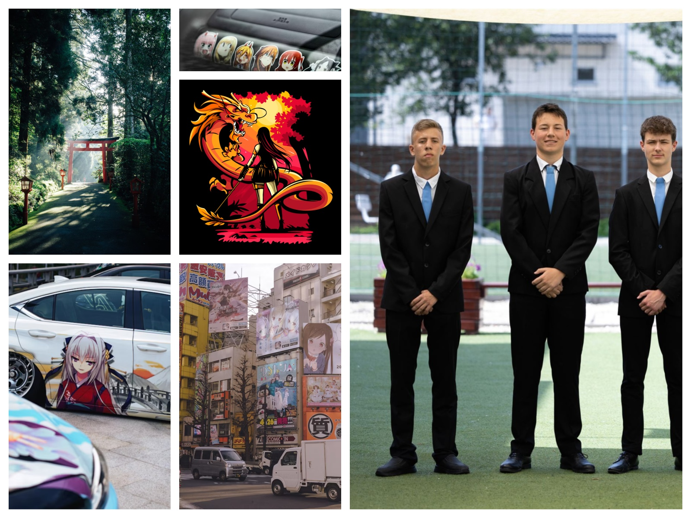

Miskolc-Szirmáról érkeztem, 15 éves vagyok, szabadidőmbe szeretek sorozatokat nézni, barátokkal játszani videójátékokkal vagy kint a szabadba focizni ha jó idő van néha szoktam rajzolni is.
Azért a Kandót választottam, mert érdekel az informatika főleg a programozás, mivel okleveles vagyok szüleim szeretnék, hogy egyetemre menjek amit én ellenzek de néha elgondolkodok, hogy lehet jó ötlet lenne.
